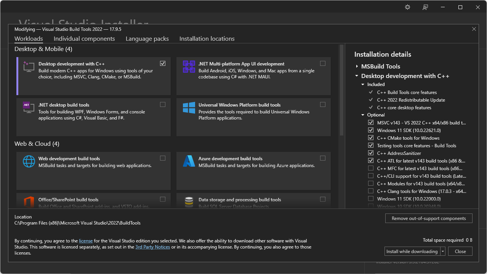
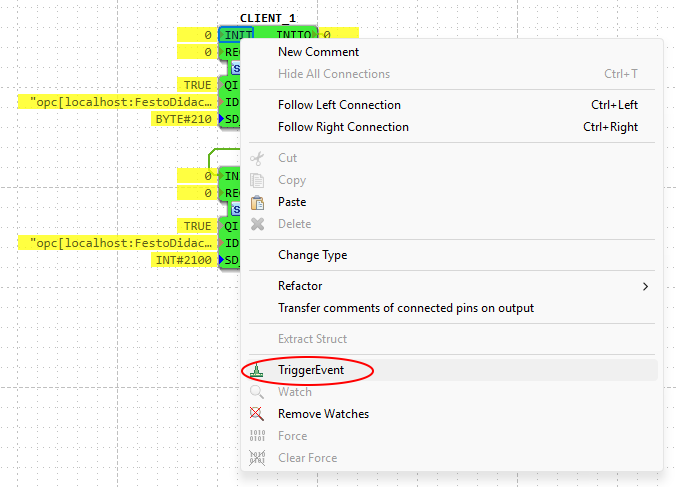
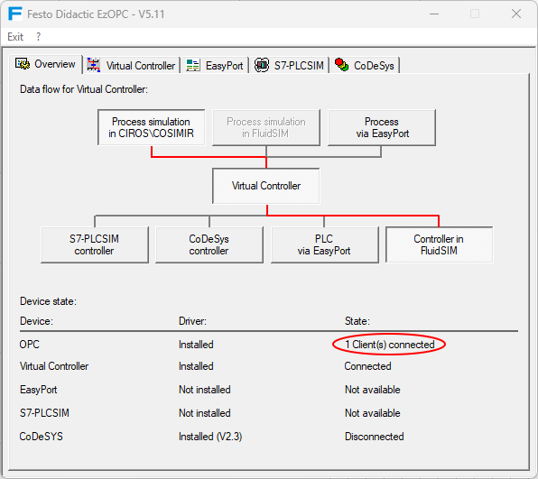
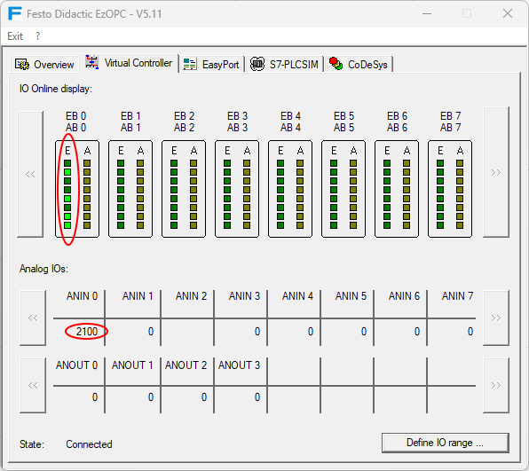

{
"cmake.configureOnOpen": false,
"cmake.configureSettings": {
"CMAKE_INSTALL_PREFIX": "D:/4diac/OPC-Client-X64/",
"OPCDACLIENT_TESTING": false
}
}
OPC DA
This section will show you how to create an OPC DA Client with 4diac IDE and how to use it with 4diac FORTE. Download the following packages:
-
OPC Client library release v0.5.1
Prepare and compile OPC Client Toolkit
-
Unzip Boost C++ Libraries
-
Install Visual Studio Build Tools with the components shown in the below. Since Visual studio 2013, atls.lib and atlsd.lib are unified as atls.lib which together with headers could be detected by the msvc, so that no need to specify in CMakeLists.txt for OPC module.

-
Clone OPC Client library, check out to develop branch and open the OPC-Client-X64 folder in Visual Studio Code, Visual Studio Code with C/C++ Extension Pack installed should be detect OPC-Client-X64 as a CMake project. Create settings.json file inside .vscode folder as below.
-
Open command palette(ctrl + shift + p), compile in below command:
cmake:select a kit; //choose Visual Studio Build Tools 2022 Release cmake:select variant; //debug or release cmake:configure; cmake:build //compile cmake:install //install
Compile 4diac FORTE with OPC DA Client Support
-
Create a MS Visual Studio Code Project of 4diac FORTE with CMake as described in Compiling and Debugging 4diac FORTE with MS Visual Studio Code and add the following variables in
settings.jsonwhich are required for OPC Client support:-
FORTE_COM_OPC: ON, -
FORTE_COM_OPC_LIB_ROOT: Your path to opc lib root, -
FORTE_COM_OPC_BOOST_ROOT: Your path to boost root,
-
-
Open the 4diac FORTE Project with MS Visual Studio Code.
-
compile or debug 4diac FORTE
Create OPC Client
Start the 4diac IDE and create a new System with a new Application for one Device. Add a CLIENT_1 Function Block to the Application, set the following input values, and map it to the hardware.
-
QI= 1 -
ID=opc[localhost:FestoDidactic.EzOPC.2:2000:0.01:VirtualPLC.EB0:VirtualPLC.AB0] -
SD_1=BYTE#210
whereas the ID input has the following format:
opc[host:serverName:updateRate:deadBand:fbInputItems:fbOutputItems]
-
host: address to computer with OPC server -
serverName: OPC server name, e.g.Matrikon.OPC.Simulation -
updateRate: update frequency in milliseconds -
deadBand: dead band used for update of value (same unit as value) -
fbInputItems/fbOutputItems: items to be added, items should be separated with a comma e.g.
Add a second CLIENT_1 Function Block to the Application, set the following input values, and map it to the hardware.
-
QI= 1 -
ID="opc[localhost:FestoDidactic.EzOPC.2:2000:0.01:VirtualPLC.Analog.ANIN0:VirtualPLC.Analog.ANOUT0]" -
SD_1=INT#2100
Start 4diac FORTE and deploy the Application. Switch the System into online mode and start watching the in- and outputs. For further information about Monitoring functionalities follow the link.
After triggering the INIT event, the OPC-client tries to connect with the OPC-server.
In this example the OPC-server is FestoDidactic.EzOPC.2.
It is a tool from Festo and can be downloaded here.

When the connection is established, a window of the server pops up.

Now trigger the REQ event to send the data from client to server.
BYTE#210 should be send to the server’s port VirtualPLC.EB0.
Click to "Virtual Controller" tab to check if the OPC server has received the information.

Where to go from here?
-
Go back to Protocols index:
Communication Index -
If you want to go back to the Start Here page, we leave you here a fast access:
Start Here page
Or Go to top